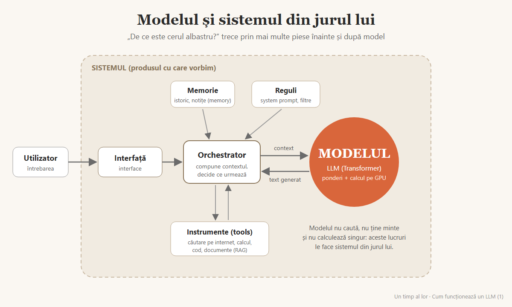
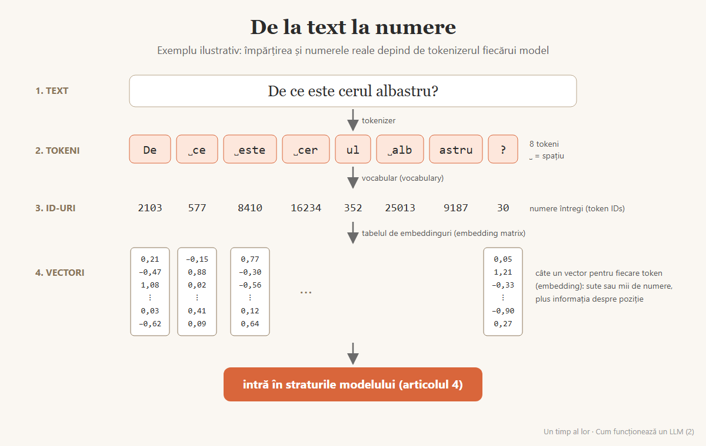
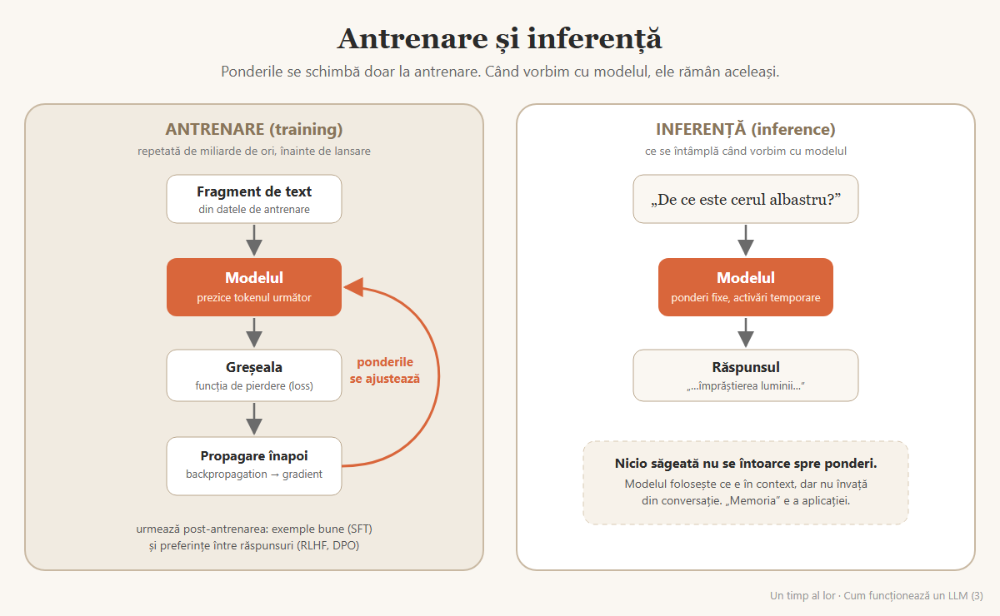
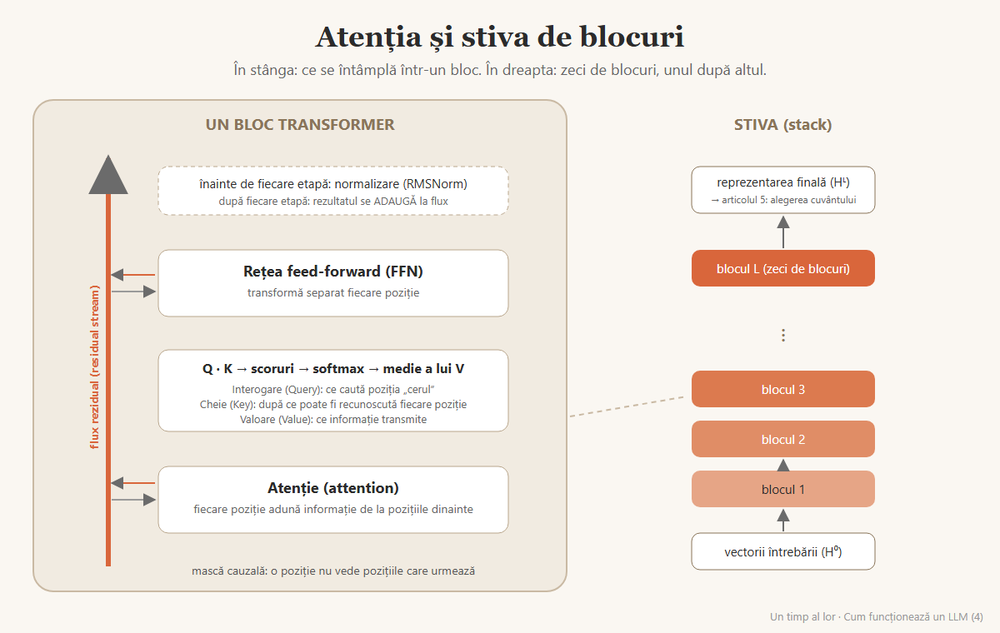
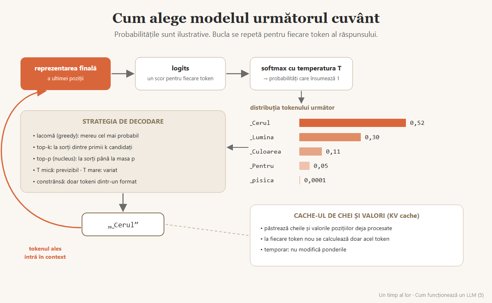
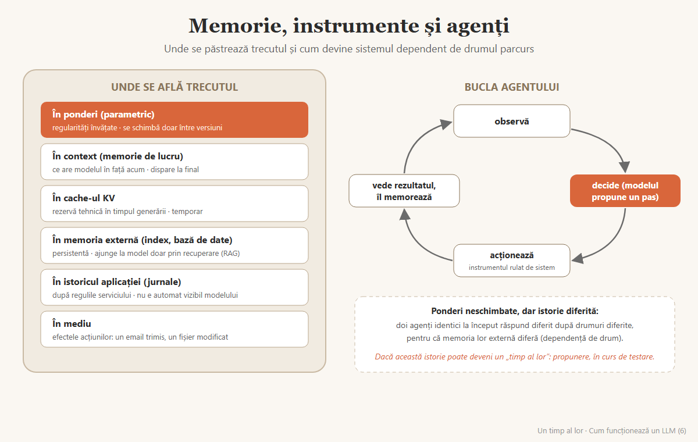

1. Modelul și sistemul din jurul lui
Ce e modelul și ce e produsul din jurul lui: orchestrator, memorie, instrumente, reguli, și pe ce rulează fizic.
Serie de șase articole · Series of six articles (Romanian) · blogul „Un timp al lor”
Seria explică, pe înțelesul unui cititor curios, cum funcționează un model de limbaj: de la text la tokeni, de la antrenare la generare și de la model la agent. Fiecare termen tehnic apare și în engleză, ca să poată fi căutat în literatura de specialitate. Ultima parte marchează explicit ce e cunoaștere stabilită și ce e propunerea mea.
Articolele apar marțea, în ordinea de mai jos, pe Substack. Linkurile funcționează din data indicată.
Ce e modelul și ce e produsul din jurul lui: orchestrator, memorie, instrumente, reguli, și pe ce rulează fizic.
Tokeni, vocabular, identificatori, embeddinguri și informația despre poziție; de ce limbile nu sunt tratate egal.
Ponderi, antrenare, post-antrenare, și de ce o conversație nu înseamnă învățare.
Atenția (interogare, cheie, valoare), blocul Transformer, fluxul rezidual și stiva.
Logits, probabilități, temperatură, strategii de decodare și memoria cache de chei și valori.
Unde se păstrează trecutul unui sistem, bucla agentului și o propunere marcată explicit ca atare.





